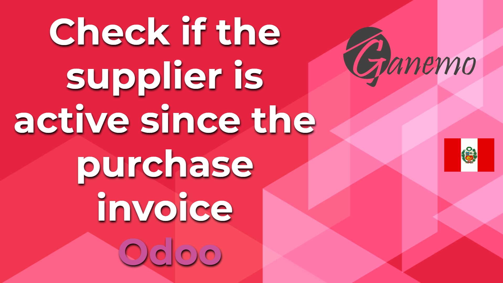

<section class="oe_container oe_dark">
    <div class="oe_row oe_spaced">
        <div class="oe_span8">
            
        </div>
        <div class="oe_span8">
            <span>It allows you to control whether a RUC is Active or Ingrained at the time of making a purchase invoice, and if it does not meet both conditions,
                it does not allow you to validate the invoice and warns you that the supplier does not meet said condition</span>
        </div>
    </div>
</section>
